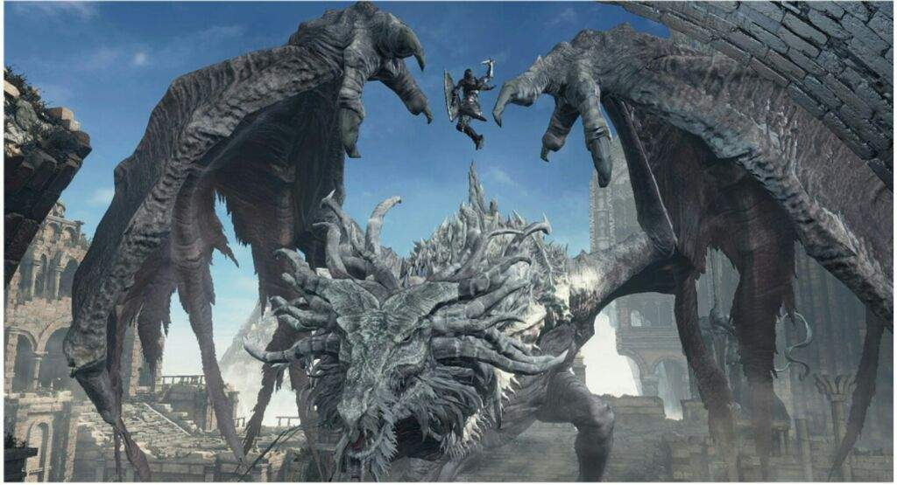

← Volver
← Volver
El Wyvern Antiguo es un jefe de Dark Souls III. Es un enorme wyvern gris y su batalla de jefe es única, en el sentido de que hay una forma extraordinaria de aniquilarlo además del usual "golpear y correr" que se requiere en la mayoría de los jefes. En lugar de enfrentar al wyvern cara a cara, el jugador puede optar por correr hacia las ruinas, enfrentar una gran cantidad de enemigos regulares y llegar lo suficientemente alto como para lanzar un ataque en picada en la cabeza del wyvern. Esto lo eliminará de un solo golpe, lo que nos ahorra muchísimo tiempo.
"Un enorme Wyvern Gris que se encuentra protegiendo las puertas del Pico del Archidragón."
Este jefe es opcional y no hay ningún NPC disponible para ser invocado y asistir en la batalla. También existe una variante "no jefe" de esta criatura, justo después de un grupo de Lagartos de Roca antes de llegar a la gran campana. Este segundo wyvern dropea 6 trozos de titanita, 3 escamas de titanita y 3 titanitas centelleantes al ser derrotado.
¿Dónde encontrar al Wyvern Antiguo en Dark Souls III? Se encuentra en el Pico del Archidragón, inmediatamente después de la primera hoguera. Para ganar accesso al Pico del Archidragón, el jugador debe haber obtenido el gesto "Camino del Dragón" del área que se encuentra detrás del campo de batalla de Oceiros, el Rey Consumido. Luego debe dirigirse al Calabozo de Irithyll, encontrar la estatua de dragón donde se consigue el Torso de Piedra del Dragón y usar el gesto al lado de éste.
| Playthrough | NG | NG+ | NG++ | NG+3 | NG+4 | NG+5 | NG+6 | NG+7 |
|---|---|---|---|---|---|---|---|---|
| Solo Souls | 70000 | 140000 | 154000 | ? | ? | ? | ? | ? |
Esta es la cantidad de Almas que obtendremos al derrotar al Wyvern Antiguo en los diferentes playthrough. También dropea la Cabeza de Piedra del Dragón.
| Playthrough | NG | NG+ | NG++ | NG+3 | NG+4 | NG+5 | NG+6 | NG+7 |
|---|---|---|---|---|---|---|---|---|
| Vida Total | 7.873 | 7.881 | 8.669 | 9.063 | 9.457 | 10.245 | 10.639 | 11.034 |
| Tipo de Daño | Básico | Golpe | Cortante | Empuje | Mágico | Fuego | Rayo | Oscuridad |
| Absorciones | 66% | 66% | 68% | 56% | 54% | 80% | 5% | 48% |

 ↑
↑